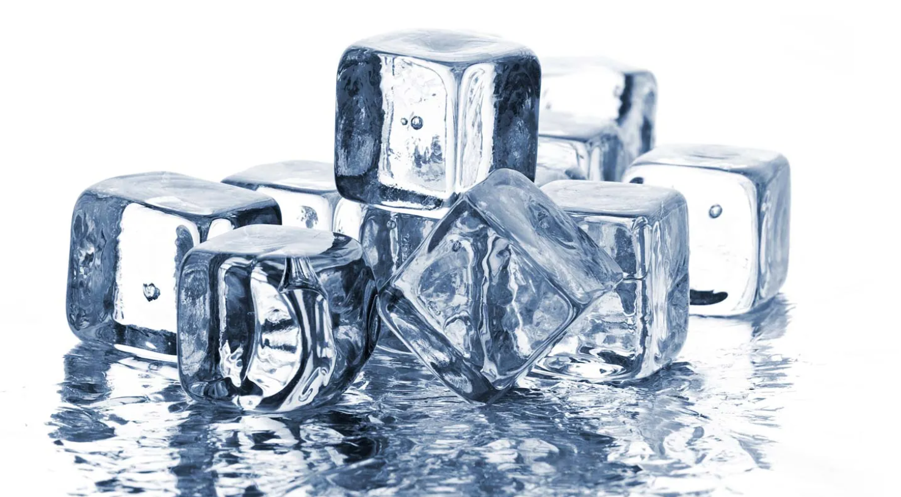
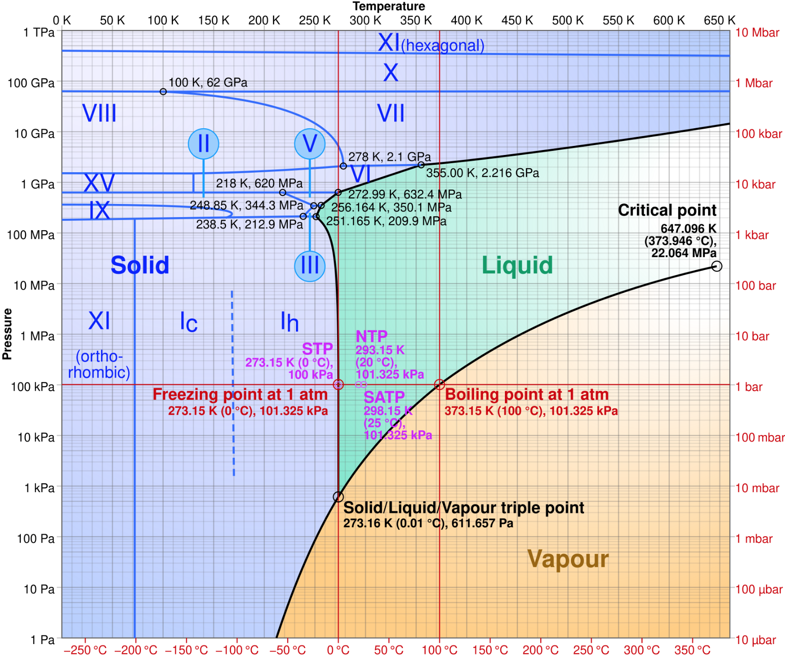
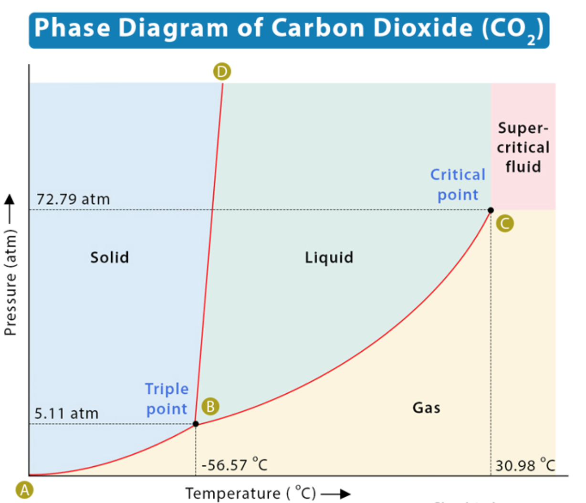

Pilot article | Some of Water's Interesting Quirks

Have you ever wondered why lakes freeze over at the top, rather than the bottom? This is due to an interesting thermodynamics quirk that makes water denser than when it is frozen. Regular water at room temperature has a density of around 998.2 kg per metre cubed, and ice has a density of around 916.7 kg per metre cubed, allowing it to float on liquid water.
To understand what’s going on here, we need to take a closer look at what happens on the molecular level.
When any substance changes phases from liquid to solid, or freezing, it takes more energy than just the temperature change. If I want to change 1 kg of water from 20 degrees celsius to 0 degrees celsius ice, I would need to first cool the water molecules down to 0 degrees celsius, and then cool it further to slow the molecules enough to form a different molecular structure. Basically, water can be at 0 degrees celsius as a liquid, and it can also be 0 degrees celsius as a solid. To make that phase change, you need energy dictated by that substance’s latent heat of fusion. This is different depending on the substance.
In this case, the latent heat of fusion, multiplied by the mass of the substance, determines how much energy must be removed from the system to achieve a phase change from liquid to solid.
When water freezes, it forms a hexagonal lattice structure that actually takes up more space, becoming less dense, than its liquid counterparts. You can recognize this kind of lattice when you look at snowflakes. The liquid molecules can slide past each other, coming closer on average and therefore being more dense than ice.
At 3.8 degrees celsius, water is at its highest density. It approaches 100 kg per metre cubed. The molecules can slide past each other, in a slow fashion, while also not being confined to a lattice pattern which would force them further apart. Any cooler, and it would begin to resemble its frozen state.
We can plot this in a graph with the y-axis representing density and x-axis representing temperature.
We are taught that the colder things are, the denser they become. This makes water such an outlier because as it cools, it becomes less dense.
When drawing particle diagrams, we often assign gasses with generous spacings between particles, moving at high speeds; liquids with moderate spacings and an unorganized structure; and solids with a rigid, tight formation. This shows how unique and remarkable it is for life to be possible to form with a substance such as water.
If water didn’t behave in this curious fashion, life itself may not have been able to exist. If water was denser when frozen, ice would begin forming at the top of lakes, and then sink to the bottom. Warmer water would be forced to the top, and before long the entire body of water would freeze over, along with any animals. In this fashion, life could have been eradicated, or at least severely restricted.
On another note, for every substance, you can plot what’s called a phase diagram. This is a diagram of the phases a substance is in with varying temperature and pressure. The y-axis represents pressure and the x-axis represents temperature, often in kelvin.
Here’s the phase diagram for water:

This diagram displays the quirk of water, as the border between solid and liquid slopes up to the left, instead of to the right, as most common substances do. For example, here is a phase diagram of carbon dioxide:

Interesting aspects of the water phase diagram, in my opinion, are the “triple point” and the “critical point”. As you can see on this diagram, the triple point of water is at around 612 pascals of pressure and 0.01 degrees celsius. This is where water assumes some of each state, being neither or. The “critical point” is where pressure and temperature are so great that the line between liquid and gas begins to blur. Beyond this point, they are essentially the same thing, called a supercritical fluid.
You may also notice the many solid states ice can take. These are nearly all created in labs with pressures unattainable in nature. The natural ice we all know and love is denoted Ih. The other ice that may occur naturally high in the atmosphere is Ic, cubic ice.
Image Credits:
Phase Diagram of Water: cmglee
P.S. Fun fact: A frozen lake in winter is probably covering 3.8 degree celsius water!